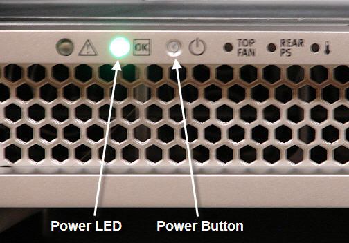

Operating Documentation
Direction 5670000, Rev# 1
Module Version 3.0, Version Date 8/19/08
Operating Documentation |
| ||||
| ELECTROCUTION HAZARD! | ||||
| DANGEROUS VOLTAGES ARE PRESENT THROUGH OUT THE SYSTEM CABINET WHEN POWER IS APPLIED. | ||||
| REFER TO osha lockout tagout requirements. |
| ||||
| Follow this procedure for removing power to the ICN Chassis. Failure to properly power down ICNs may result in premature ICN failure. | ||||
| ||||
| Do not turn power off on the ICNs from the power button on the front panel. The ICNs have software running on disk drives that may become corrupted if not shut down properly. | ||||
If the application's software is down, you can power down the ICN's by using command line at the root level.
Log into the application using the root login.
In the xterm window, type: /etc/init.d/poweron_vres stop and press <Enter>. The ICN(s) should turn off after one minute.
At the host computer, go to the Service Browser Utilities >> Toolbox >> VRE >> Power Control(see Illustration 1).
Confirm the ICN numbers and their MAC Addresses. The MAC addresses are printed on a sticker on the front of the ICNs (see Illustration 2).
Click [POWER OFF ICN(x)](see Illustration 1). Wait for the ICN to power off (see Illustration 3). Upon refreshing the Power Control link, Illustration 4 shows the ICNs in its current state.
The ICN(s) are powered down if the green disk drive LEDs in front of the ICNs (right side) are no longer illuminated. The Power LEDs (left side) will continue to flash even after power-down.(see Illustration 5).
| ||||
| In the event you do not have access to the browser or the command line, you will have to power off the ICNs manually. Please try this method before powering off the GOC. This is the preferred method because it does not corrupt the files on the hard drive. | ||||
Momentarily depress the power button (see Illustration 6). This brings down the ICN in a “soft” method. It takes about a minute or two for the operating system (OS) to boot down. (After power-down, the green Power LED will continue to slowly blink, but the disk drive LEDs will go dark.)
Illustration 6: ICN Power LED and Power Button

If the OS freezes or is not responding, then the “soft” method did not work properly. In this case, hold the power button down for six seconds to force the power off.
Proceed to the Common Service Desktop and go to Utilities >> Toolbox >> VRE >> Power Control. As shown in Illustration 4, click [POWER ON ICN] for the respective ICN. The new ICN will automatically be powered on.